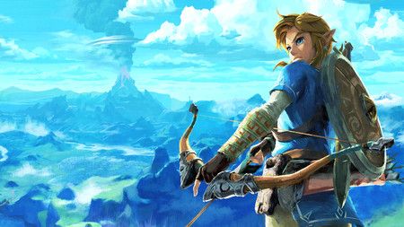
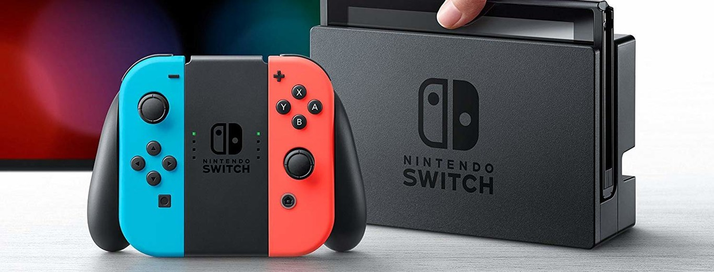
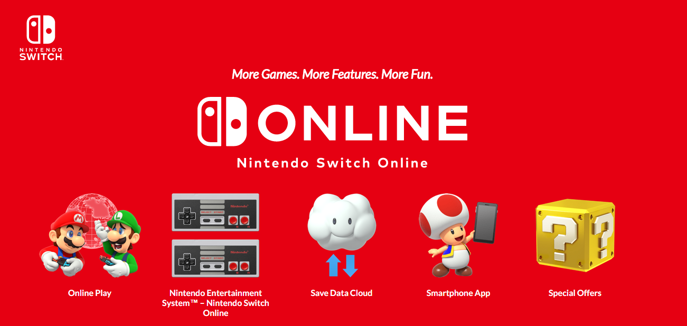

| APARTADOS | |
| Juegos Switch | |
| Nintendo Switch | |
| Nintendo Switch Online | |
¡Buenas tardes Nintenpaolos!
En el artículo de hoy os vamos a traer varios temas, en el primero discutiremos los juegos más famosos de la consola híbrida Nintendo Switch.
Comentaremos qué los llevo al éxito, explicaremos un poco de ellos, ¡y nuestras propias experiencias!
Para más información, pulsa en la imagen de abajo.
Nuestro segundo tema tiene que ver con la propia consola, ¿Cómo llegó al éxito? ¿Cuáles fueron las claves que le hizo llegar tan lejos?
Nuestro tercer y último tema tratará sobre el servicio online de Nintendo Switch.
¡Y eso sería todo por hoy!